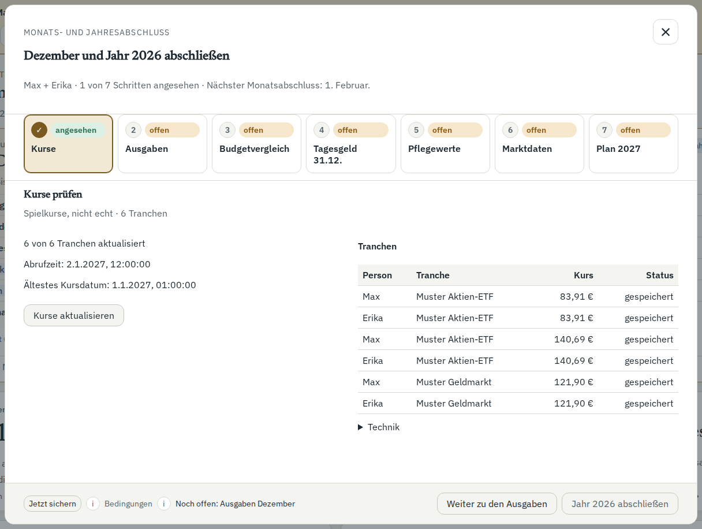
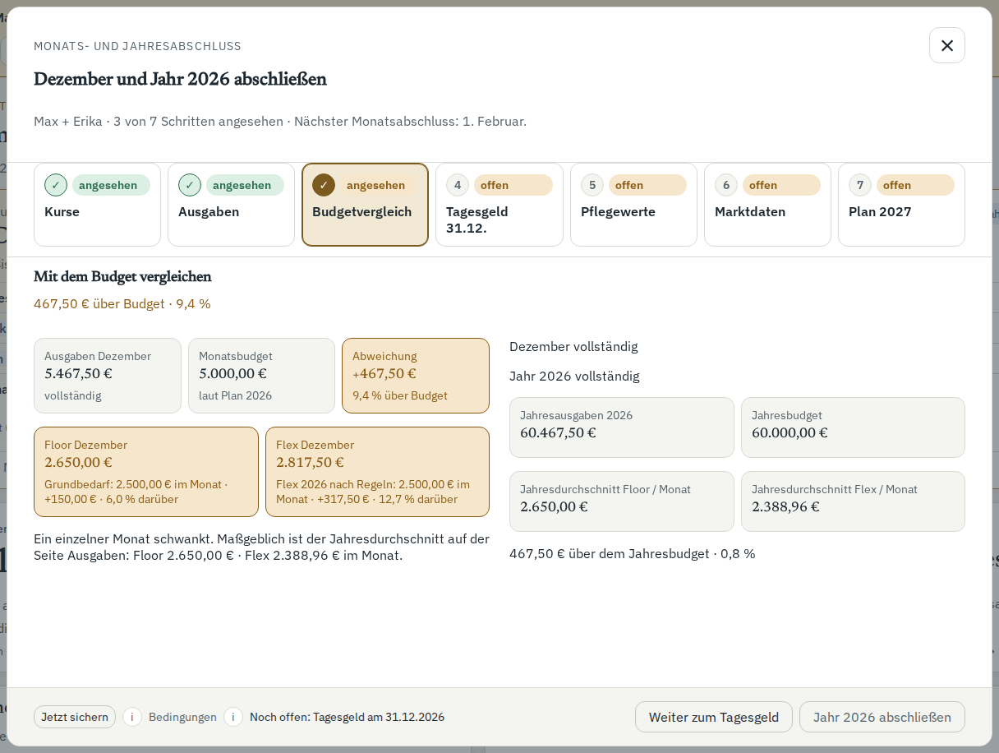
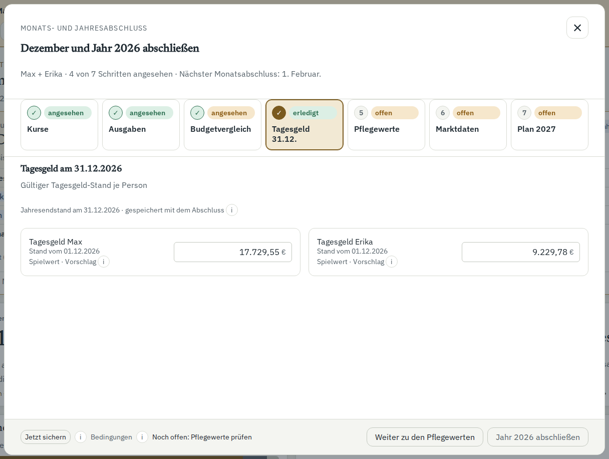
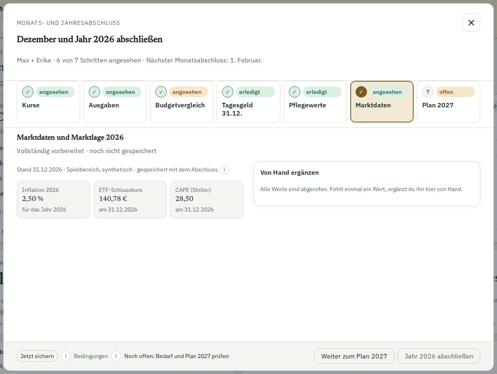

Du startest einen eigenen Spielbereich am 15.12.2026 und wechselst auf den 02.01.2027. Ein Hauptklick bestätigt 2026, schließt Dezember ab und schreibt den Plan für 2027.
Alle Werte stammen aus dem Muster-Haushalt mit Max und Erika Mustermann. Die Bilder zeigen synthetische Daten.
1. Die Übersicht bietet den Jahresabschluss an.

2. Der Reiter Kurse zeigt Kursstand und Tranchen-Tabelle nebeneinander.3. Der Reiter Ausgaben Dezember zeigt Personenkarten und die offene Kategorie-Tabelle.

4. Der Reiter Budgetvergleich zeigt links Dezember und rechts das Jahr.

5. Der Reiter Tagesgeld 31.12. zeigt die Jahresendstände nebeneinander.

6. Der Reiter Marktdaten zeigt die Jahreswerte; das Jahreshoch erscheint nur bei einem verdeckten Bärenmarkt, dann mit Wahl im Reiter Plan.7. Der Reiter Pflegewerte zeigt Pflegegeld, Heim-Eigenanteil sowie Staffel, Deckel und eigene Ausgaben bereits fortgeschrieben.8. Der Reiter Plan 2027 zeigt Bedarf links; rechts stehen der Stand des Plans 2026 und das Monatsbudget.9. Das Ergebnis zeigt links „Was zu tun ist“ und das Monatsbudget, rechts Kacheln, den Stand des alten Plans und Herleitungen ohne Reiter.